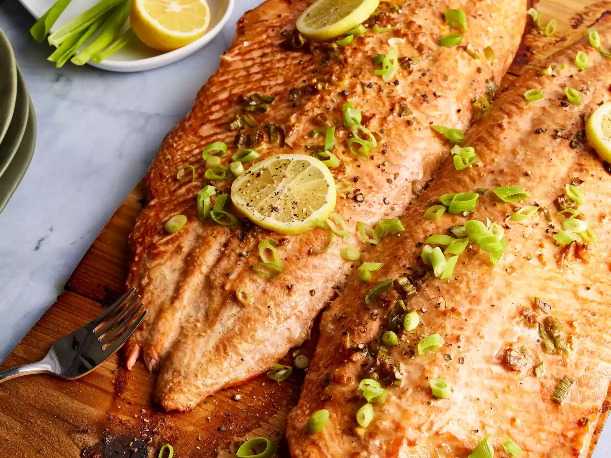
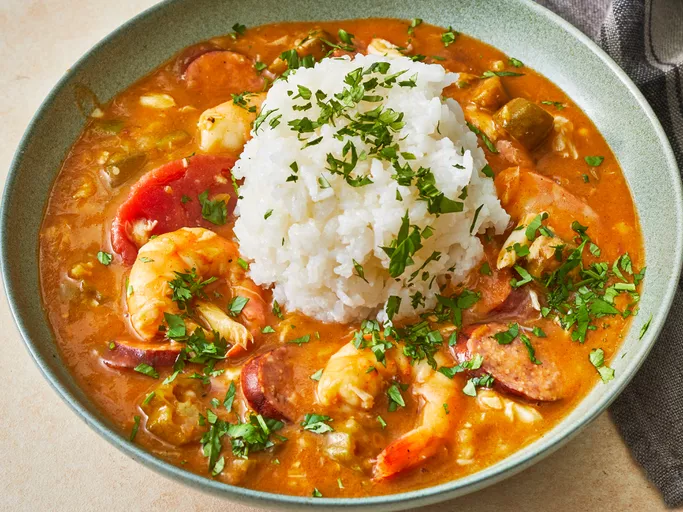
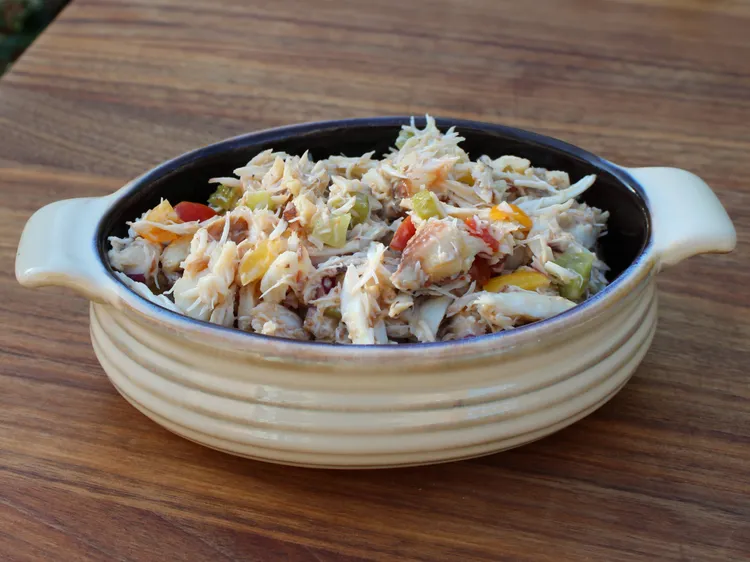

Welcome to Odin Recipes — a curated collection of dishes that bring bold flavors and comforting traditions to your table. From smoky cedar-planked salmon to a soulful Creole gumbo and a refreshing summer crab salad, each recipe is crafted to inspire your cooking and delight your guests. Explore, cook, and enjoy meals that celebrate both taste and story.
Tender salmon, marinated in a rich blend of soy sauce, toasted sesame oil, fresh ginger, and garlic, then grilled on a cedar plank. The wood infuses the fish with a delicate smokiness, while the marinade creates a balance of salty, nutty, and aromatic flavors.
This hearty Creole gumbo captures the spirit of New Orleans in a single bowl. A dark, slow-cooked roux builds deep flavor, while smoky andouille sausage, sweet Gulf shrimp, and tender okra create layers of spice and soul.
A light yet flavorful summer salad that lets fresh crabmeat shine. Crisp pickles, juicy tomatoes, and sharp red onion bring brightness and crunch. Perfect on its own, over greens, or spooned onto toasted bread for a cool summer bite.
